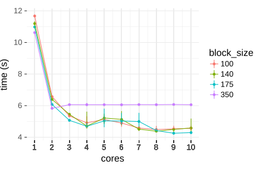
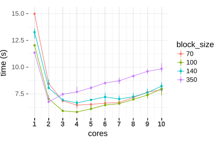
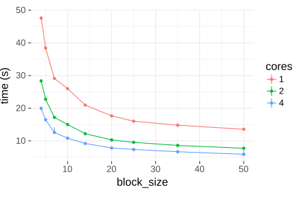
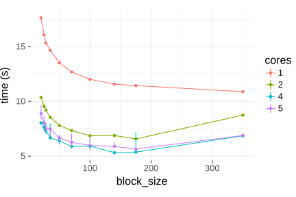

paRallel
© 2016 Anton Lebedevich
Anton Lebedevich:
- develops scalable back-end services
- solves distributed performance issues
- loves time series and anomalies
- blogs at mabrek.github.io
Why?
Your laptop has > 1 cores, use them all!
What's Available
cran.r-project.org/view=HighPerformanceComputing
parallel(r-base)foreachwithdoParallelin top 100 downloaded- local tricks here and there
xgboostnthreaddata.tablefwritere2rparallel = TRUE- …
parallel
library(parallel)
cores <- detectCores()
# Linux
mclapply(1:10, function(x) Sys.sleep(1), mc.cores = cores)
# yeah, that's it
# Windows
cluster <- makePSOCKcluster(cores)
parLapply(cluster, 1:10, function(x) Sys.sleep(1))
stopCluster(cluster)
# incomplete example, need to export data to workers too
foreach + doParallel
library(foreach)
library(doParallel)
registerDoParallel(detectCores())
foreach(i = 1:10) %dopar% {
Sys.sleep(1)
}
do***
- doParallel
- doMC
- doSNOW
- doFuture
- doMPI
- doRedis
- doRNG
Example Data
> rows <- 30000
> cols <- 700
> series <- apply(matrix(rnorm(rows * cols), rows, cols), 2, cumsum)
> object_size(series)
168 MB
Example Data

Example Task
> system.time(cor(series))
user system elapsed
10.303 0.007 10.316
Parallel Correlation
# based on https://gist.github.com/bobthecat/5024079
par_cor <- function(d, block_size, ...) {
n <- ncol(d)
nb <- n / block_size
splits <- split(1:n, rep(1:nb, each = block_size))
combs <- unique(t(apply(expand.grid(1:nb, 1:nb), 1, sort)))
blocks <- foreach(i = 1:nrow(combs), ...) %dopar% {
ca <- splits[[combs[i, 1]]]
cb <- splits[[combs[i, 2]]]
list(ca, cb, cor(d[, ca], d[, cb]))
}
res <- matrix(0, nrow = n, ncol = n)
for(block in blocks) {
ca <- block[[1]]
cb <- block[[2]]
res[ca, cb] <- block[[3]]
res[cb, ca] <- t(block[[3]])
}
res
}
WAT
> identical(cor(series), par_cor(series))
[1] FALSE
WAT
> registerDoParallel()
> options(cores = 1)
> system.time(par_cor(series, ncol(series)))
user system elapsed
20.680 0.030 20.727
It's not That Bad
> system.time(cor(series, series))
user system elapsed
21.190 0.000 21.203
> all.equal(cor(series), par_cor(series), tolerance = 0)
[1] "Mean relative difference: 1.956681e-16"
> .Machine$double.eps
[1] 2.220446e-16
Parameters to Choose
- MC or PSOCK
- cores
- block size
Test Setup
Intel(R) Core(TM) i7 CPU 950 @ 3.07GHz
4 physical cores, 8 logical (HT)
18Gb
R version 3.3.2 (2016-10-31)
Platform: x86_64-pc-linux-gnu (64-bit)
Running under: Arch Linux
Effect of Cores (MC)
Effect of Block Size (MC)
Effect of Cores (PSOCK)
Effect of Block Size (PSOCK)
Small Blocks (PSOCK) WAT
Profiling tools
profvis(GUI for Rprof)perf record --call-graph dwarf -p ...perf record -e sched:sched_stat_sleep -e sched:sched_switch -e sched:sched_process_exit --call-graph dwarf -m 512M -p ...sysdig '(evt.type!=switch) and (syscall.type exists) and (proc.name=R)'strace -f -p ...- read the source, Luke …
snow.time
Preschedule (PSOCK)
Preschedule (PSOCK)
Baseline
> system.time(cor(series))
user system elapsed
10.427 0.000 10.434
Recursive and acc. high-water RSS+CACHE : 782780 KiB
Final Multicore
> registerDoParallel()
> options(cores = 9)
> mcoptions <- list(preschedule = TRUE)
> system.time(par_cor(series, 175, .options.multicore = mcoptions))
user system elapsed
26.434 0.249 4.328
Recursive and acc. high-water RSS+CACHE : 893800 KiB
Final PSOCK
> cluster <- makePSOCKcluster(4)
> registerDoParallel(cluster)
> snow_options <- list(preschedule = TRUE)
> system.time(par_cor(series, 140, .options.snow = snow_options))
> stopCluster(cluster)
user system elapsed
1.236 0.157 5.834
Recursive and acc. high-water RSS+CACHE : 1467460 KiB
Dangers
- speedup is nonlinear
- small tasks
- memory usage (copy, COW)
- different results from single and parallel code
- shared mmapped memory (ff, bigmemory)
- nested parallel loops (e.g. plyr)
- openmp, mkl, ...
- random numbers (see doRNG)
- profiling and debugging are much harder
Summary
- foreach + doParallel
- enough tasks to evenly fill all cores
- HT cores are not that useful (*)
- be careful
Links
gforge.se/2015/02/how-to-go-parallel-in-r-basics-tips/
topepo.github.io/caret/parallel-processing.html
adv-r.had.co.nz/Profiling.html
Q&A
Anton Lebedevich
mabrek@gmail.com